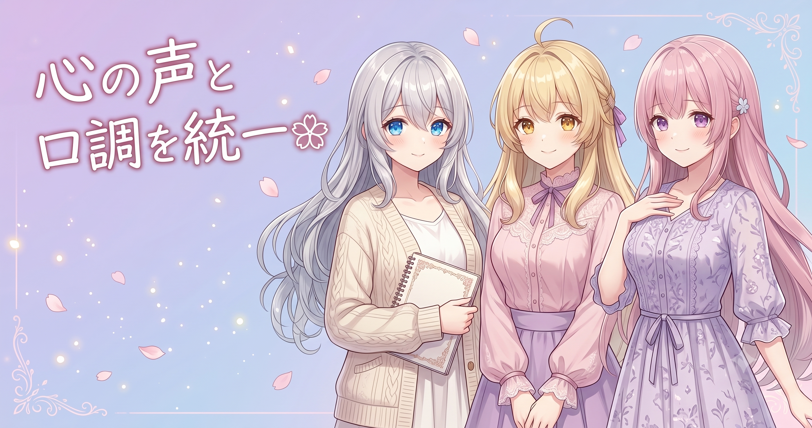

今日やったこと（ぜんぶ完了ぶんだけ）
AI Bloom Sisters では、ショートアニメ動画のセリフやキャラのリアクションをルール（設定の集まり）で組み立てています。今日はその中の フィオナの“心の声”と“口調”まわり を中心に、3つの改修を完了しました。
- すれ違い・勘違いコメディ系ジャンルを、「確認用の方針」をベースに全面改訂して恒久組み込み
- フィオナの“心の声”の口調を、全ジャンル共通で統一（ただし内容の強弱はジャンルごとに残す）
- フィオナの裏設定の片鱗を全ジャンルへ反映＋“心の声”の音量パラメータを 1.4 に引き上げ
今日のキモは「共通化するところ」と「ジャンルごとに変えるところ」をちゃんと分けたこと。ここ、AIでキャラを作る人みんなに効くコツです。
学び①：口調は「共通化」、中身は「ジャンル別」に分ける
AIにキャラを演じさせるとき、設定（指示書）をジャンルごとにコピーして書きがちです。でもそれだと、同じキャラなのに ジャンルが変わると口調までブレる という事故が起きます。今日いちばん効いた改善はここでした。
- 口調（語尾・一人称・テンポ）＝キャラの“声” → これは全ジャンルで1か所に共通化
- 内心ツッコミの“強さ・量”＝シーンの味付け → これはジャンルごとに変える
たとえるなら、主人公の話し方は1パターン（口調＝共通）だけど、エピソードのテンションは回ごとに違う……みたいな分け方です。「変わってはいけないもの」と「変えていいもの」を最初に線引きするだけで、量産しても破綻しにくくなります。
| 要素 | 扱い |
|---|---|
| 口調・語尾・性格の芯 | 全ジャンル共通で固定 |
| ツッコミの鋭さ・量・テンション | ジャンルごとに強弱を残す |
学び②：勘違いコメディは「確認用の方針」で作り直すと安定する
もう一つの作業が、すれ違い・勘違いコメディ系ジャンル の全面改訂です。これまではその場のノリで条件を足していたのを、「確認用の方針」（=チェック項目を先に決めて、それに沿って書き直す） に切り替えて、恒久ルールとして組み込みました。
ポイントは、思いつきで足さないこと。
- 先に「このジャンルで満たすべき条件リスト」を作る
- セリフや展開は、その条件を満たしているか確認しながら書く
- OKだったものだけ“恒久”として本採用する
こうすると、後から見返したとき「なぜこの仕様なのか」が説明できる状態になります。AIへの指示書は 増築するほど迷子になりやすい ので、“確認リスト基準”は地味だけど一番効く整理術です。
再現できるコツ：基準にしたサンプルへ短い符号（例：S6F77確認用57）を振っておくと、後日「あの直し、何を見て決めたんだっけ？」を一発で思い出せて、同じ条件を再現して比較もできる。
学び③：リアクションの“音量”は数値で持つと調整がラク
最後に、フィオナの裏設定にあるツッコミ気質を全ジャンルへほんの片鱗だけ反映しつつ、“心の声”の 音量（強さ）を 1.4 に引き上げ ました。
ここでいう「音量」は実際のサウンドではなく、“内心ツッコミをどれくらい前に出すか”を表す数値パラメータです。1.0 を基準に、1.4 にすると内心の主張がやや強めになります。
こういう“さじ加減”は、言葉（「ちょっと強めに」）で持つより数値で持つのが圧倒的に管理しやすいです。
- 数値なら「1.2 → 1.4」と少しずつ試せる
- 強すぎたらすぐ戻せる（再現性がある）
- ジャンルごとに別の値を入れる、という拡張もしやすい
“感覚”を“目盛り”に置き換える。これだけでチューニングが何倍も速くなります。
学び④：直したら“仕組みに組み込む”＝恒久組み込み
今日の作業の通底するキーワードが 「恒久組み込み」 です。
1話だけ手直ししても、次の話でまた同じズレが起きたら意味がありません。そこで、今回決めたルール（口調・強弱の線引き・音量）を その場の修正で終わらせず、台本生成の仕組みそのものに組み込みました。
- ❌ その場のお願い → 一回こっきりで消える
- ⭕ 土台ルールに転記 → 毎回・全ジャンルに自動適用
コツ： 検証して「これは良い」と確信できたものだけを土台に昇格させること。何でも土台に足すとルールが太りすぎて、AIが優先順位を見失います。
まとめ（再現できる有意義ポイント）
- 「共通化するもの」と「ジャンル別にするもの」を最初に線引きする。 キャラの“声（口調）”は共通、シーンの“味付け（強弱）”はジャンル別。これで量産しても破綻しにくい。
- 指示書は思いつきで増築しない。 先に「確認用のチェック項目」を決め、それを満たしたものだけ恒久ルールとして本採用する。
- さじ加減は“言葉”ではなく“数値”で持つ。 「心の声の音量=1.4」のように目盛り化すると、少しずつ試す・すぐ戻す・ジャンル別に変える、が全部やりやすい。
- 直したら“仕組みに組み込む”（恒久組み込み）。 一度きりの修正で終わらせず、土台ルールに転記して全エピソードへ自動反映させる。
- キャラの面白さは“ギャップ”から。 表向きは丁寧、内心はツッコミ——その温度差を数値で調整できるようにしておくと、健全な笑いを安定して作れる。